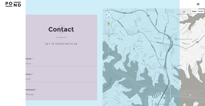
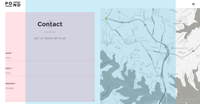
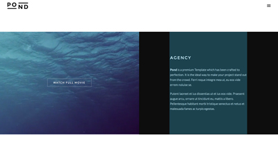
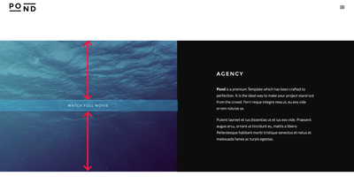
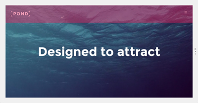
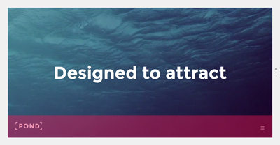
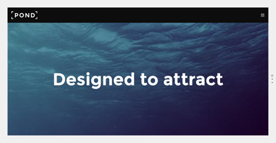
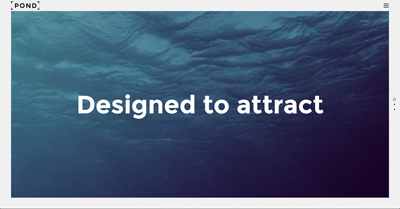

Pond HTML Template Documentation
Introduction
You bought an HTML / CSS template, so you need some basic knowledge for those 2 languages. The Best way is to play around with the different elements/sections but you find some helpfull tips and explanations how this template is build up and works.
Please compare all the explanation from this documentation with the original files to have a better understanding.
Video Tutorials
Take a look at the video tutorials.
General Css Elements
These are general classes, id's or tags which you will find frequently in almost all html files.
#page-content: you will find this element on every page. It contains all main content (header,maincontent,footer)
.wrapper: it wrapps the element to a the main content width. (1080px = default / 900px for smaller screens / 730px for tablet (portrait) / 260px for phones).
.wrapper-small: same use than .wrapper but with smaller sizes. (780px = default / 660px for smaller screens / 550px for tablet (portrait) / 260px for phones).
.left-float: use this classname for any element you want to float to the left.
.right-float: use this classname for any element you want to float to the right.
.clearfix: for all elements which contains any floating element.
.align-center: use this class if you want to align the text for a whole section or just an element.
.text-light: this class is needed if you use a darker background for a section (for example a dark parallax section)
.full-height: this class is used for elements which should take the whole viewport height as mainly used on the page-title section in portfolio-single.html for example.
.transition: this class is only for anchor tags. It will do a smooth transistion when leaving the page.
You can see for example that it has been used for the portfolio / blog links.
HTML Structure
For a One Page file you need to respect some structure. Here's a basic structure example.
...
<div id="page-content">
<header>
</header>
<div class="page-body">
<section id="about">
<div class="section-inner">
CONTENT FOR ABOUT SECTION GOES HERE
</div>
</section>
<section id="services">
<div class="section-inner">
CONTENT FOR SERVICES SECTION GOES HERE
</div>
</section>
</div>
<footer>
</footer>
</div>
...
You can choose custom id names for the different "sections". Just make sure that the same name is used for the navigation and that they are unique. When clicking on the menu item it will scroll to the asigned section.
Border (Viewport)
One unique feature of the template is the viewport border. By default it is added to all html files but you can remove it or use a bigger border.
Remove border
Just delete the class 'bordered' on the body tag and the border elements.
<body class="bordered"> <!-- BORDERS (Don't want any border? Delete the class bordered on the body and this part) --> <div id="bodyborder-left"></div> <div id="bodyborder-right"></div> <div id="bodyborder-top"></div> <div id="bodyborder-bottom"></div> <!-- BORDERS -->
Bigger border
The default border has a width of 40px. You can increase this border to 60px by just adding the class 'big-border' to the body tag.
<body class="bordered big-border">dsqdsq Video Tutorial
Headings (Titles)
By default the headings (h1,h2,h3,h4,h5,h6) Uses the main heading font "Montserrat" and have a top margin.
But you have the possibilities to add some classes to your headings.
- alttitle (will use a different font "Lato" and a smaller top margin)
- title-minimal (uppercase and letter-spacing are added)
- title-ultraminimal (uppercase and a bigger letter-spacing are added)
<h3 class="alttitle title-minimal">...</h3>
Another heading feature is the data-bigletter. Use this data attribute if you want to add a big letter in the background of the heading.
<h2 data-bigletter="A"><strong>About</strong></h2>
Sections
A <section id="MENUITEM"> should always be related to a menu item! Thanks to this, the menu item knows where to scroll when it is clicked.
As you've seen above a section is always followed by a "section-inner". This is a must! You can optionally add the class wrapper the the section-inner if you know that this section will not contain any other element which will be fullwidth.
In the index.html, no section does this, because all of them have a fullwidth element such as parallax or split section. For all other sections there has been added an additional div tag with the wrapper class (See example below).
...
<section id="about">
<div class="section-inner">
<div class="wrapper">
<div class="main-title align-center">
<h2 data-bigletter="A"><strong>About</strong></h2>
<div class="separator"><span></span></div>
<h6 class="alttitle title-minimal">This template has been crafted to perfection</h6>
</div>
...
</div> <!-- END .wrapper -->
</div>
</section>
...
The sections have a default top padding (no bottom-padding). If you don't want the section to stick to the next section/element you need to add an additional spacer.
... <div class="spacer spacer-big"></div> </div> <!-- END .section-inner --> </section> <!-- END SECTION #contact-->
In any case you don't want the default top padding, you can add the class "notoppadding".
Example: Done in the index.html for section #home in order to stick to the top. Otherwhise they would have been a spacing between.
<section id="home" class="notoppadding">
Page Title
The page-title element is used for all pages which doesn't use a fullwidth slider on first element. So in fact for all html files except index.html, index2.html, index-mulipage.html and work-multipage.html.
The is the default markup for the page-title section.
The page-title section can contain any type of content but usually there is one or multiple "heading" included.
...
</header>
<!-- PAGE TITLE -->
<section id="page-title">
<div class="section-inner">
<h4><strong>Title Name</strong></h4>
<div class="separator-small"><span></span></div>
<h6 class="alttitle title-minimal">SUbtitle</h6>
</div>
</section>
<!-- PAGE TITLE -->
<div class="page-body">
...
By adding the class full-height the page-title section will automatically adapt to the viewport height. When full-height is added, the section-inner automatically have a vertical middle align. In this I recommend also to add the align-center class to have a vertical + horizontal center align.
<section id="page-title" class="full-height"> <div class="section-inner align-center">
You can also align the section-inner to the top or bottom by using vTop or vBottom.
<section id="page-title" class="full-height"> <div class="section-inner vTop">Only use vTop + vBottom in combination with full-height.
It won't have any impact without the full-height class.
Split Sections
I really encourage you to take a few minutes and to read this part. The Split sections probably is the tricky part of the whole template. But if you read this, you will understand how it works and how to use it.
First rule to use split sections is the following: A split section CAN NOT be placed into an element which does not take the full width size like .wrapper, .wrapper-small, ...!
... <div id="agency-split" class="split-section clearfix"> <div class="split-left split-half"> <div class="split-wrapped-content"> YOUR CONTENT <div> <div class="split-bg"><div> <div> <!-- END .split-left --> <div class="split-right split-half"> <div class="split-wrapped-content"> YOUR CONTENT <div> <div class="split-bg"><div> <div> <!-- END .split-right --> <div> <!-- END .split-section --> ...
This is the default markup. Start by opening a div with classname "split-section clearfix". Choose a custom id to make reference in the css.
split-left / split-right
This will manage the position of the the 2 sections (left + right). It must be used in combination with split-onethird, split-twothird or split-half to assign the size of the left/right element.
Sometimes you will see that the .split-right is placed above/before the .split-left (agency-split in index.html for example). This will have no affect on bigger screens. Why placing it above though? For smartphone view. In smartphone view it will be on first position although it's on second (right) postition on big screens.
split-bg
This element is only needed if you want to have a background color,image,video for the allocated split-left/split-right element.
spli-bg will automatically fill out the whole left/right section depending the size of the section.
In the contact section (index.html) you'll see that I placed the google map into split-bg in order to adapt to the height of the section.
Split Content
What's the difference betwenn split-wrapped-content, split-full-content & split-mini-content?
split-wrapped-content
This will respect the main wrapped content and won't pass over this size. (1080px = default / 900px for smaller screens / 730px for tablet)
...
<div class="split-left split-half">
<div class="split-wrapped-content">
YOUR CONTENT
<div>
<div>
...

split-full-content
This will take the full available width.
...
<div class="split-left split-half">
<div class="split-full-content">
YOUR CONTENT
<div>
<div>
...

split-mini-content
Use the mini content if you want to limit the width of the content.
It won't use the full width available but is still centered.
It will limit the content to 400px.
...
<div class="split-left split-half">
<div class="split-mini-content">
YOUR CONTENT
<div>
<div>
...

vertical-center
Optionally you can add the class "vertical-center". This will automatically center the content vertically.
...
<div class="split-left split-half">
<div class="split-full-content vertical-center">
YOUR CONTENT
<div>
<div>
...

Fonts
You have to include the fonts in every html you use/create. Make sure to include them in the head before the css files.
<!-- FONTS --> <link href='http://fonts.googleapis.com/css?family=Montserrat:400,700' rel='stylesheet' type='text/css'> <link href='http://fonts.googleapis.com/css?family=Lato:300,400,700' rel='stylesheet' type='text/css'> <!-- FONTS -->
You can see that I included 2 Fonts (Montserrat & Lato) in different weights.
So when I choose this font in the style.css I always added the weight I wanted.
h1, h2, h3, h4, h5, h6 {
font-family: 'Montserrat';
font-weight: 400;
color: #0d0d0d;
}
Change fonts
To change a font choose another Webfont from the Google Font library or use other sources.
You have to go through the syle.css (+ settings.css) and change all selectors where I assigned the font.
Tip: use the search/replace function (Mac = cmd+f / Win = ctrl+f) which almost every editor got.
Revolution Slider: The font captions settings for the revolution slider are in the settings.css.
Preloader / Pageloader
You will find the html markup of the page loader in all html pages. This displays a loading bar until the page is loaded.
<!-- PAGELOADER -->
<div id="page-loader" class="text-light">
<div class="page-loader-inner">
<div class="loader-logo-name"><img src="files/uploads/pond-logo-light.png" alt="Logo"/></div>
<h6 class="alttitle title-minimal">Loading</h6>
</div>
</div>
<!-- PAGELOADER -->
The loader bar is done by the pace script/plugin. So make sure to have this script included if you want to show the loader.
<script type='text/javascript' src='files/js/jquery.pace.js'></script>
Header
The header is another unique feature of the template. Use this markup for the header.
<!-- HEADER -->
<header id="header">
<div class="header-inner clearfix">
<!-- DEFAULT HEADER CONTENT -->
<div class="default-header-content">
<div id="logo" class="left-float">
<a id="defaut-logo" class="logotype" href="index.html">
<img src="files/uploads/pond-logo-light.png" alt="Logo"></a>
<a id="fixed-logo" class="logotype" href="index.html">
<img src="files/uploads/pond-logo.png" alt="Logo"></a>
</div>
<div class="menu right-float clearfix">
...
</div>
</div>
<!-- DEFAULT HEADER CONTENT -->
</div>
</header>
<!-- HEADER -->
Use 2 logos (default-logo + fixed-logo). The default-logo is the logo which shows on page load in overlay mode. Usually the light logo if the background is dark. The fixed-logo is the logo which shows when the header is fixed in the border part.
By default the header is placed on top in "overlay mode".

Add the class "overlay-bottom" to place it to the bottom.
<header id="header" class="overlay-bottom">

If you don't want the overlay header you can use the class "non-overlay" and the header will just place at the order of the html markup with a dark (black) background. In this case the "overlay-bottom" class don't have impact anymore.
<header id="header" class="non-overlay">

Fixed/Sticky Header
By default the header will switch to a fixed/sticky position as soon the header is out of the viewport. By using the class "sticky-header" the header will be fixed on page load. (Idem for the footer)
<header id="header" class="sticky-header">

You can also disabling the fixed/sticky feature by using the class "non-sticky".
<header id="header" class="non-sticky">
Alternative fixed/sticky Header
You can show a different fixed header than the default header (as done in the portfolio/blog single html pages). This is helpful for shiwing different infos on the fixed header.
<!-- HEADER -->
<header id="header">
<div class="header-inner clearfix">
<!-- FIXED HEADER CONTENT (*optional / this will be shown when header is switching to fixed) -->
<div class="fixed-header-content">
<h1 id="header-name" class="alttitle title-minimal left-float"><strong>Lokomotive</strong></h1>
<div id="social-share" class="right-float">
<a href="#" class="show-share">Share</a>
<ul class="socialmedia-widget alttitle">
<li class="facebook"><a href="#"></a></li>
<li class="twitter"><a href="#"></a></li>
<li class="googleplus"><a href="#"></a></li>
<li class="pinterest"><a href="#"></a></li>
</ul>
</div>
</div>
<!-- FIXED HEADER CONTENT -->
<!-- DEFAULT HEADER CONTENT -->
<div class="default-header-content">
...
</div>
<!-- DEFAULT HEADER CONTENT -->
</div>
</header>
<!-- HEADER -->
Video Tutorial
Change Logo
Change the path to your logo image.
...
<div id="logo" class="left-float">
<a id="defaut-logo" class="logotype" href="index.html">
<img src="files/uploads/pond-logo-light.png" alt="Logo"></a>
<a id="fixed-logo" class="logotype" href="index.html">
<img src="files/uploads/pond-logo.png" alt="Logo"></a>
</div>
...
Use 2 logos (default-logo + fixed-logo). The default-logo is the logo which shows on page load in overlay mode. (Usually the light logo if the background is dark) The fixed-logo is the logo which shows when the header is fixed in the border part.
By default the height of the logo is limited to 40px. So even if you have an image file which is higher than 40px it will be resized to 40px. If you want to change that you need to do this in several places in the style.css
(Everywhere you can find the /* depending on the logo height */ comment on the style.css)
AT LINE 510 you should see this
header #logo {
...
height: 40px;
AT LINE 520 you should see this
#logo a { #logo a { height: 40px; } }
AT LINE 620 (LOGO FOR PAGELOADER SCREEN)
.page-loader-inner .loader-logo-name img {
...
max-height: 40px;
AT LINE 760 (LOGO FOR MENU SCREEN)
nav#main-nav .nav-logo img { height: 40px; }
AT LINE 888 + 889
.non-overlay .open-nav { height: 40px; }
.overlay-bottom .open-nav { margin-top: 20px; }
Slider / Carousel
This template uses 2 Slider scripts.
- Revolution Slider for fullwidth Home Slider
- Owlcarousel for all other content sliders (portfolio,blog,testimonials) or carousel (logo)
Revolution Slider
For a full documentation of the revolution slider you'll find a second documentation folder called "revolution-slider".
Please see the settings.css for the slider stylings. (captions, navigation, etc)
Use this markup.
<!-- REVOLUTION SLIDER --> <div class="rev-slider-container"> <div class="rev-slider" > <ul> <!-- THE SLIDES --> <li></li> ... </ul> </div> </div> <!-- REVOLUTION SLIDER -->
After you've added your markup and the different slides initialise the slider in the script.js at line +-280.
/*----------------------------------------------
R E V O L U T I O N S L I D E R
------------------------------------------------*/
if(jQuery().revolution) {
jQuery('.rev-slider').revolution({
delay:10000,
startheight: 500,
startwidth: 1200,
hideTimerBar: "on",
onHoverStop:"on",
navigationType:"bullet",
hideThumbs:0, // Bullets always visible
navigationHAlign:"right",
navigationVAlign:"center",
navigationHOffset:20,
navigationVOffset:0,
navigationArrows:"none",
fullWidth:"off",
fullScreen:"on",
fullScreenOffsetContainer: "#pseudo-header"
});
}
Combining RS Slider + Background video / Parallax Background
You can combine the revolution slider + Background video OR Parallax Background. To do so you must first use the transparent.png image file as main image of the different slides.
<!-- THE FIRST SLIDE --> <li data-transition="slidedown" data-slotamount="5" data-masterspeed="1200"> <img src="files/uploads/transparent.png">
After this you just need to add the general background video / parallax rules to the parent section (probably #home).
Owlcarousel / Slider
I used the owlcarousel plugin for all slides which are in the main content area and for the carousel. Please make sure to include the owl.carousel.css,owl.transitions.css and jquery.owl.carousel.min.js for the pages you want to use the carousel/slider.
Owl Slider
<div class="owlslider owlnavdark"> <div> ... </div> ... </div> <!-- END .owlslider -->
By default the bullets are white but you can choose dark/black bullets by adding owlnavdark
You will find the script initialiser in the script.js at line +-306.
jQuery(".owlslider").owlCarousel({
autoPlay : false,
stopOnHover : true,
navigation: false,
slideSpeed : 800,
paginationSpeed : 800,
singleItem : true,
autoHeight : true
});
Owl Carousel
<div class="owlcarousel content-carousel"> <div> ... </div> ... </div> <!-- END .owlcarousel -->
You will find the script initialiser in the script.js at line +-317.
jQuery(".owlcarousel").owlCarousel({
items : 4,
itemsDesktop:false,
itemsDesktopSmall:false,
itemsTablet: [860,2],
itemsMobile: [640,1],
autoplay: false,
autoHeight : true
});
You can also choose/change some default options with the data attribute.
<div class="owlcarousel content-carousel" data-autoplay="6000" data-pagination="false">
Masonry (Portfolio / Blog layout)
The isotope script is used for the masonry layout used for Portfolio and Blog layout. Create as much items as you wants, here's the default markup.
<div id="GRID-ID" class="masonry clearfix" data-maxitemwidth="600"> <div class="masonry-item branding"> ... </div> <!-- END .masonry-item --> ... </div> <!-- END #GRID-ID -->
Details
- #GRID-ID -> you can customize this name, make sure to use the same name in the filter option if used (see below).
- .data-maxitemwidth -> This handles the itemwidth. as higher the value as bigger the thumbnails. This also depends on the screen size. If you use for example '600' make sure that your images has also this width because in some cases the tiles could have this width size.
- .branding -> This is the name for the filter attribute
You can also add the classname masonry-spaced to the grid element. This will add a spacing between the thumbnails which you can manage in the css.
<div id="portfolio-grid" class="masonry masonry-spaced ...
The Masonry will automatically adapt to the width of the parent container.
For more options please take a look at the portfolio-layout.html
Filter
The filter is part of the isotope script. It will only work on masonry-items.
All filter anchors needs a data-option-value attribute with the correct filter name (example: .branding)
<ul id="portfolio-filter" class="filter clearfix" data-related-grid="portfolio-grid"> <li><a class="active" href="#" data-option-value="*">All</a></li> <li><a data-option-value=".web" href="#" title="Web">Web</a></li> <li><a data-option-value=".branding" href="#" title="Motion">Motion</a></li> <li><a data-option-value=".motion" href="#" title="Print">Print</a></li> </ul>
It's important that the value of data-related-grid is the same than the id name of the grid (see above).
Background Video
In fact you can add a background video to every kind of element but I usually do it in a horizontal section or a split section.
Make sure to provide your video in 3 different formats:
- mp4
- webm
- ogg
Add the classname "videobg-section" (and optionally 'text-light' if you use a dark video) to the element, and fill in the different "data-" options.
<div id="parallax-video" class="horizontalsection text-light videobg-section" data-videofile="files/uploads/coffee" data-videowidth="1280" data-videoheight="720" data-videoposter="files/uploads/poster-image.jpg" data-videoparallax="false" data-videooverlaycolor="#000000" data-videooverlayopacity="0.5" data-sound="true">
- data-videofile -> please add the path to your files without the file ending (ie: .mp4)
- data-videowidth + data-videoheight -> very important that you enter the right values
- data-videoposter -> this poster is shown for devices which don't support background videos
- data-videoparallax -> true or false for a parallax effect
- data-videooverlaycolor -> optional overlay color / leave empty if not wanted
- data-videooverlayopacity -> opacity value for the overlay
- data-sound -> if true, the video also plays the sound with option to mute it manually
Note: If you're uploading your site to a server and the video is not showing in some browsers, this is server related. Make sure to enable the MIME types. You can enable them via your xerver settings or via htaccess.
Note: Mobile devices like Tablets or Smartphones doesn't support background videos. In this case the poster image will be displayed.
Parallax Backgrounds
Same as background video, you could add a parallax image to every element but I usually created an "horizontalsection" or "split section" to do so.
Add the classname "parallax-section" (and optionally 'text-light' if you use a dark background), the "data-parallax-image".
<div id="testimonials" class="horizontalsection text-light parallax-section" data-parallax-image="files/uploads/parallaxbg.jpg">
For a split section you would add this to the .split-bg
Video
Embedded Video
Go to vimeo ,youtube or any other site and copy the embedding iframe code.
<iframe src="http://player.vimeo.com/video/20621393" width="500" height="281" frameborder="0" webkitAllowFullScreen mozallowfullscreen allowFullScreen></iframe>
Selfhosted Video
When using an selhosted video you need to provide the video in 3 different files to make it work in all browser.
- .m4v
- .ogv
- .webm
<script type="text/javascript">
jQuery(document).ready(function(){
if(jQuery().jPlayer) {
jQuery("#jquery_jplayer_video1").jPlayer({
ready: function () {
jQuery(this).jPlayer("setMedia", {
m4v: "YOURVIDEOPATH.m4v",
ogv: "YOURVIDEOPATH.ogv",
webmv: "YOURVIDEOPATH.webm",
poster: "YOURIMAGE.jpg"
});
},
size: {
width: "100%",
height: "auto"
},
swfPath: "files/jplayer",
cssSelectorAncestor: "#jp_interface_video1",
supplied: "ogv,m4v,webmv,all"
});
}
});
</script>
<div id="jquery_jplayer_video1" class="jp-jplayer jp-jplayer-video"></div>
<div class="jp-video-container">
<div class="jp-video">
<div class="jp-type-single">
<div id="jp_interface_video1" class="jp-interface">
<ul class="jp-controls">
<li><div class="seperator-first"></div></li>
<li><div class="seperator-second"></div></li>
<li><a href="#" class="jp-play" tabindex="1">play</a></li>
<li><a href="#" class="jp-pause" tabindex="1">pause</a></li>
<li><a href="#" class="jp-mute" tabindex="1">mute</a></li>
<li><a href="#" class="jp-unmute" tabindex="1">unmute</a></li>
</ul>
<div class="jp-progress-container">
<div class="jp-progress">
<div class="jp-seek-bar">
<div class="jp-play-bar"></div>
</div>
</div>
</div>
<div class="jp-volume-bar-container">
<div class="jp-volume-bar">
<div class="jp-volume-bar-value"></div>
</div>
</div>
</div>
</div>
</div>
</div> <!-- END .jp-video-container -->
Use this markup and change the path to your files. Please make sure to have included the jplayer.css and the jplayer.min.js.
Audios
Selfhosted Audio
When using an selhosted audio you need to provide the audio in 2 different files to make it work in all browser.
- .mp3
- .ogg (oga)
<script type="text/javascript">
jQuery(document).ready(function(){
if(jQuery().jPlayer) {
jQuery("#jquery_jplayer_audio2").jPlayer({
ready: function () {
jQuery(this).jPlayer("setMedia", {
mp3: "YOURAUDIOPATH.mp3",
oga: "YOURAUDIOPATH.ogg",
end: ""
});
},
swfPath: "files/jplayer",
cssSelectorAncestor: "#jp_interface_audio2",
supplied: "oga,mp3,all"
});
}
});
</script>
<div id="jquery_jplayer_audio2" class="jp-jplayer jp-jplayer-audio"></div>
<div class="jp-audio-container">
<div class="jp-audio">
<div class="jp-type-single">
<div id="jp_interface_audio2" class="jp-interface">
<ul class="jp-controls">
<li><div class="seperator-first"></div></li>
<li><div class="seperator-second"></div></li>
<li><a href="#" class="jp-play" tabindex="1">play</a></li>
<li><a href="#" class="jp-pause" tabindex="1">pause</a></li>
<li><a href="#" class="jp-mute" tabindex="1">mute</a></li>
<li><a href="#" class="jp-unmute" tabindex="1">unmute</a></li>
</ul>
<div class="jp-progress-container">
<div class="jp-progress">
<div class="jp-seek-bar">
<div class="jp-play-bar"></div>
</div>
</div>
</div>
<div class="jp-volume-bar-container">
<div class="jp-volume-bar">
<div class="jp-volume-bar-value"></div>
</div>
</div>
</div>
</div>
</div>
</div> <!-- END .jp-audio-container -->
Use this markup and change the path to your files. Please make sure to have included the jplayer.css and the jplayer.min.js.
Contact Form
Create a new form with all the attributes like below
<form id="contact-form" class="checkform" action="" target="contact-send.php" method="post" >
You must at least add 3 form-rows with the name, email + message. These 3 fields are required for the sending. Take a look at the markup on the contact section of the index.html
You can add more fields if wanted.
Please add the classname req to the label if this field is required.
<div class="form-row clearfix"> <label for="customfield" class="req">Message *</label> <input type="text" name="customfield" class="customfield" id="customfield" value="" placeholder="Custom Field *" /> </div>
When adding a new field you also need to add these fieldnames in the hidden field fields seperated and ending by a ",".
Change also the email and the Subject Name.
<input type="hidden" name="subject" value="Contact Subject Pond html" /> <input type="hidden" name="fields" value="name,email,message,customfield," /> <input type="hidden" name="sendto" value="YOUREMAIL@SERVER.com" />
Please add an form-note message at the wanted position. This message will be displayed if there are any errors/success.
<div id="form-note"> <div class="alert alert-error"> <h6><strong>ERROR</strong>: Please check your entries!</h6> </div> </div>
Note: If you have good php knowledge you can take a look at the contact-send.php and change it if you want. The javascript check function is in pond-form.js
Google Map
Search first for your longitude and latitude on itouchmap.com.
Once you got them use this script to add your google map.
The map will always take the full width of the parent container. You just need to set up the height vie inline css.
<div id="map" class="header-map" style="height:400px;"></div>
<script type="text/javascript" src="http://maps.google.com/maps/api/js?sensor=false"></script>
<script type="text/javascript">
function mapinitialize() {
var latlng = new google.maps.LatLng(-33.86938,151.204834);
var myOptions = {
zoom: 14,
center: latlng
scrollwheel: true,
scaleControl: false,
disableDefaultUI: false,
mapTypeId: google.maps.MapTypeId.ROADMAP
};
var map = new google.maps.Map(document.getElementById("map"),myOptions);
var image = "files/uploads/map-pin.png";
var marker = new google.maps.Marker({
map: map,
icon: image,
position: map.getCenter()
});
var contentString = '<b>Office</b><br>Streetname 13<br>50000 Sydney';
var infowindow = new google.maps.InfoWindow({
content: contentString
});
google.maps.event.addListener(marker, 'click', function() {
infowindow.open(map,marker);
});
}
mapinitialize();
</script>
Change the map-pin image if you want and the Text for the infobox.
Elements / Shortcodes
Spacer
If you already took a look at the html files you probably met some "spacer" elements. These elements have been created to give you control over some spacings.
For example I used them to add a spacing at the bottom of the last section of the page.
Just add a div with the classname spacer + the height of the spacer
<div class="spacer spacer-big"></div>
- spacer-big = 120px
- spacer-medium = 80px
- spacer-small = 40px
- spacer-mini = 15px
Separator
The seperator will create a seperator line.
It's used for the section title for example, but you can use it where you want
<div class="separator"><span></span></div>
<div class="separator-small"><span></span></div>
Horizontal Section
The horizontal section is used for make use of different background (parallax,videobg or bg color).
A horizontal section MUST NOT be placed into a wrapper element!
<div class="horizontalsection"> <div class="horizontalinner wrapper"> ... </div> </div>
Use the markup above. You see that the horizontalsection element is always followed by a horizontalinner. This is important. The horizontalsection has nor margin-top or margin-bottom because you could make use of another horizontalsection just below another and a margin wouldn't look good. If you want a spacing between section, use a spacer element.
Icons
This template uses the icon family Pixeden 7 Stroke and Font Awesome. You can place the icons just anywhere with the <i> tag.
Pixeden 7 Stroke
<i class="pe-7s-browser pe-4x"></i>
Font Awesome
<i class="fa fa-check-square-o fa-3x"> </i>
Please take a look here to have a full list of the available icons
http://fontawesome.io/icons/
Javascript (Your custom images)
All pages include the retina.js. When your users load a page, retina.js checks each image on the page to see if there is a high-resolution (@2x) version of that image on your server. If a high-resolution variant exists, the script will swap in that image in-place.
Example
The logo image file is available in 2 version (pond-logo.png + pond-logo@2x.png).
On retina devices the @2x.png file is included.
Note
The retina.js can only apply on online server and won't work if files are opened locally.
Css Files
You should find the following css files
- style.css -> main style !important
- font-awesome.min.css -> css for fontawsome icons !important
- pe-icon-7-stroke.css -> css for Pixeden icons !important
- mqueries.css -> css rules for being responsive !important
- fancybox.css -> style for fancybox / lightbox
- isotope.css -> style for isotope animations (portfolio filter)
- colored.css -> style for colored elements
- owl.carousel.css -> owlcarousel css
- owl.transitions.css -> owlcarousel css
- jplayer/jplayer.css -> style for jplayer plugin (selhosted video/audio)
- rs-plugin/css/settings.css -> style for revolution slider plugin (home slider)
All css files with !important must be included in all html files.
The other files are only needed if you use the appropriate jquery script in the file.
Example:
The jplayer.css from the jplayer plugin is only included in the blog-single2.html because that's the only file which uses the plugin.
Note: The mqueries.css must always be the last css file!
Colored css
add the colored.css file to your html files if you want to add some colored elements. You can of course edit/add some css to this file.
Customize css
I recommend to do create a custom css file to do all your customizations or use the bottom of the style.css. You should find a CUSTOM Section. If there is an update of the template you can easily copy your customization to the updated style.css.
/*---------------------------------------------- 21. CUSTOM STYLE ------------------------------------------------*/ /*YOUR CUSTOM CSS*/
Javascript
You should find the following js files
- jquery-1.9.1.min.js -> jquery library !important
- script.js -> initiaise all different scripts !important
- retina.js -> retina script !important
- jquery.easing.compatibility.js -> easing compatibility !important
- jquery.easing.1.3.js -> easing script !important
- jquery.visible.min.js -> visible script !important
- pond-header.js -> fixed header script !important
- jquery.pace.js -> prelaoder script
- jquery.fancybox.pack.js -> fancybox / lightbox script
- jquery.owl.carousel.min.js -> owlcarousel script
- jquery.isotope.min.js -> masonry script
- jquery.bgvideo.min.js -> background video script
- jquery.counter.min.js -> script for counters
- jquery.fitvids.min.js -> size up/down all videos to parent container
- jquery.parallax.min.js -> image parallax background script
- jquery.scroll.min.js -> one page scrolling effect
- pond-form.js -> checks + sends the contact form
- files/jplayer/jquery.jplayer.min.js -> jplayer script (selfhosted audio/video)
- files/rs-plugin/js/jquery.themepunch.plugins.min.js -> revolution slider script
- files/rs-plugin/js/jquery.themepunch.revolution.min.js -> revolution slider script
All js files with !important must be included in all html files.
Please include the other script only when needed. This will increase the page speed.
Note: The script.js must always be the last js file! This is also the file you can edit if needed.
Note:
All scripts are included at the bottom of the html before closing the body tag.
Exception: jquery library is included at the top of the page below the css files.
... <!-- CSS --> <!-- JQUERY LIBRARY & MODERNIZR --> <script src="files/js/jquery-1.9.1.min.js"> <!-- JQUERY LIBRARY & MODERNIZR -->
Ressources
- latest jquery version: jQuery from John Resig
http://jquery.com/ - jquery.modernizr.min.js: Modernizr from Modernizr
http://www.modernizr.com/ - jquery.isotope.min.js: Isotope from David DeSandro
http://isotope.metafizzy.co/ - jquery.easing.1.3.js: Easing from George Smith
http://gsgd.co.uk/sandbox/jquery.easIng.php - jquery.owlcarousel.min.js: Owlcarousel from Bartosz Wojciechowski
http://owlgraphic.com/owlcarousel/index.html - jquery.jplayer.min.js: jPlayer from Happyworm Ltd
http://www.jplayer.org/ - retina.js: Retina script from retinajs.com
http://retinajs.com/ - jquery.fitvids.min.js: Video Fits
http://fitvidsjs.com/ - jquery.visible.min.js: Check the visibility
https://github.com/teamdf/jquery-visible/ - jquery.themepunch.revolution.min.js: Slider script from themepunch.com
revolution slider
All other scripts are done by SpabRice and are only allowed to use within this template.